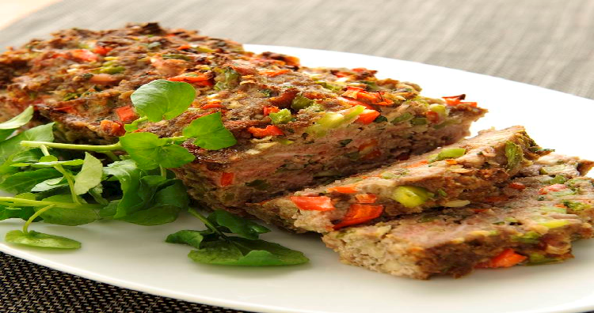

Dit gehaktbrood kan prima bij een avondmaaltijd, maar is ook een makkelijk gerecht voor een buffet.
Ingrediënten
1 Rode paprika
1 Groene paprika
1 Ui
2 Tenen knoflook
50 gram bacon
½ bosje peterselie
400gram paneermeel
1 ei
1 blikje tomatenpuree
1 theelepel tabasco
peper
Bereidingwijze
Warm de oven voor op 175 graden Celsius.
Maak de paprika's schoon en snijd ze in kleine stukjes. Maak de ui schoon en snijd deze fijn. Maak de
knoflook schoon. Snijd de bacon in dunne reepjes. Hak de peterselie fijn.
Doe het gehakt, paprika, uit, bacon, peterselie, paneermeel, ei, tomatenpuree. tabasco en peper in een
kom. Pers de tenen knoflook erboven uit en kneed goed totat alle ingrediënten zijn gemend.
Druk het mengsel in een cakevorm en bak deze ongeveer 1 uur in de oven.
Haal de vorm uit de oven. Laat even afkoelen en haal het daarna uit de vorm. Serveer het gehaktbrood op
een schotel.

Tip Lekker met meergranenstokbrood. Voor een minder zout gehaktbrood kun je de bacon weglaten.